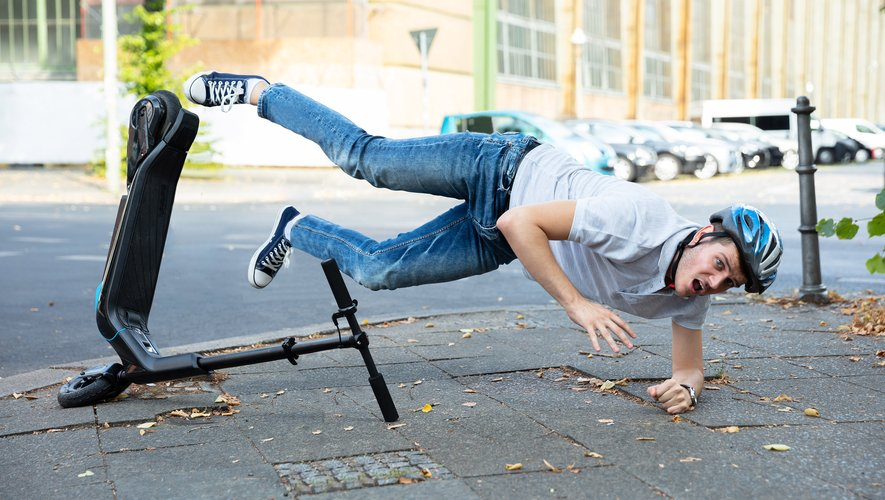
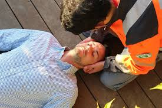

Rupture de la continuité d'un os. Peut être visible (déformation) ou non.
Entorse (élongation ligamentaire) ou luxation (déboîtement).
Choc sur tête, thorax ou abdomen → atteinte possible des organes sous-jacents.
Lorsque le traumatisme se situe au niveau de la colonne vertébrale (douleur du dos ou de la nuque), une atteinte de la moelle épinière est possible. Le sauveteur ne doit pas mobiliser la victime.
Une atteinte de la moelle épinière est possible. Ne jamais mobiliser la tête. Technique APG(M).
Si la victime présente une fracture de membre déplacée : ne pas tenter de la réaligner
Adopter la conduite à tenir face à une perte de connaissance.

